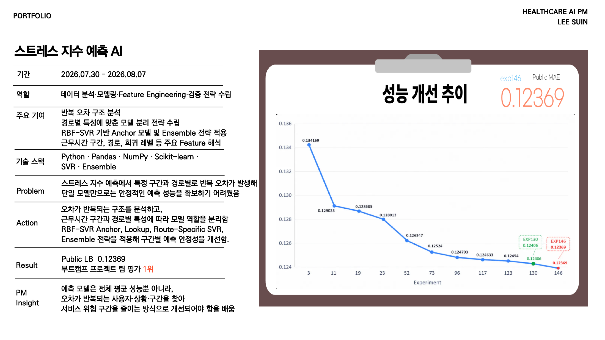

문제
스트레스 지수 예측에서 특정 구간과 경로별로 반복 오차가 발생했습니다. 단일 모델만으로는 안정적인 예측 성능을 확보하기 어려웠습니다.
실행
반복 오차 구조를 분석하고 근무시간 구간, 경로, 희귀 레벨 등 주요 Feature를 해석했습니다. RBF-SVR Anchor, Lookup, Route-Specific SVR, Ensemble 전략을 적용해 구간별 예측 안정성을 개선했습니다.
기획 관점
예측 모델은 전체 평균 성능뿐 아니라 오차가 반복되는 사용자·상황·구간을 찾아 서비스 위험 구간을 줄이는 방식으로 개선되어야 한다는 점을 배웠습니다.
